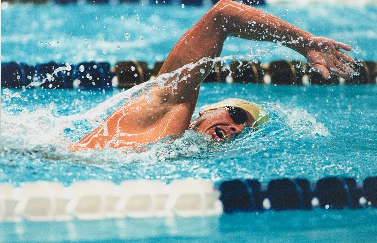
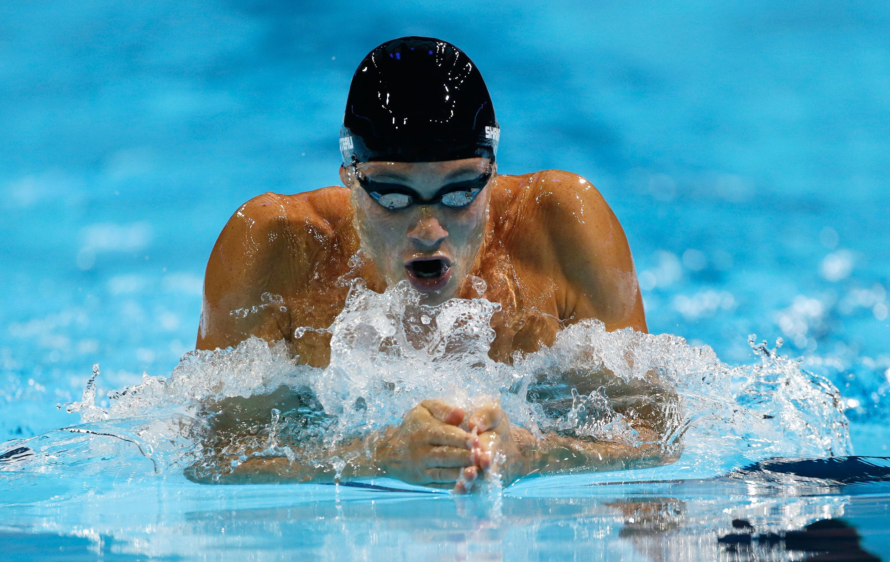
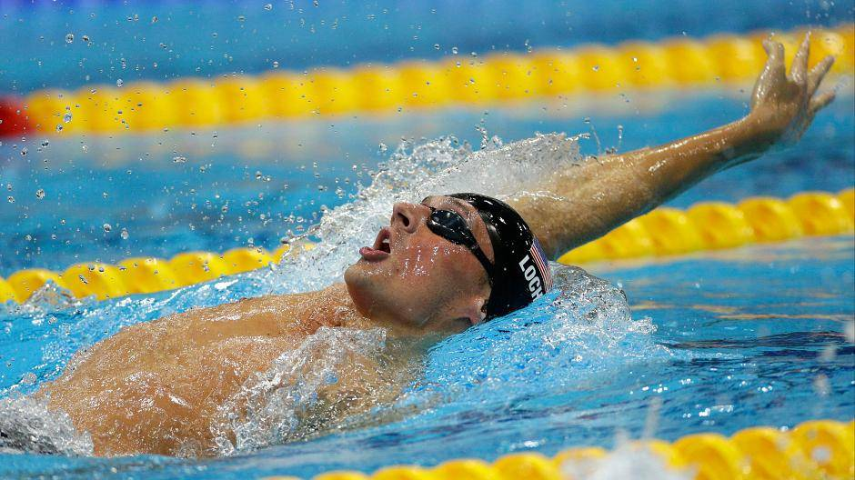
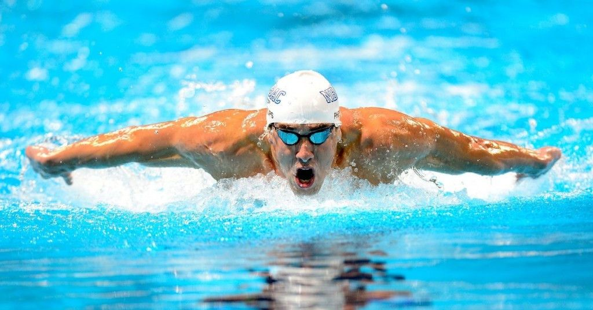

От вольного стиля до баттерфляя: техника, история и особенности каждого способа.

Самый быстрый стиль плавания. Характеризуется попеременной работой рук и ног. Лицо пловца находится в воде, вдох делается поворотом головы в сторону.

Самый древний и технически сложный стиль. Симметричные движения рук и ног в горизонтальной плоскости. Считается самым медленным, но экономичным стилем.

Единственный стиль, где старт выполняется из воды. По механике движений похож на кроль, но пловец лежит на спине. Отлично разгружает шейный отдел позвоночника.

Самый энергозатратный стиль. Требует одновременного симметричного гребка обеими руками и волнообразных движений тазом и ногами. Второй по скорости после кроля.
Плавание — отличная кардионагрузка, которая укрепляет сердечную мышцу и улучшает кровообращение без ударной нагрузки на суставы.
Необходимость задерживать дыхание и делать глубокие вдохи увеличивает объем легких и учит правильному дыханию.
Синхронизация движений рук, ног и дыхания развивает нейромышечную связь и чувство баланса.